직업상담사-2급 (2017-03-05 기출문제)
1과목: 직업상담학
1. 다음 내용은 어떤 오류가 발생한 경우인가?
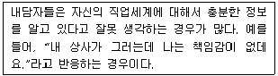
- 삭제
- 참고자료
- 어투의 사용
- 불분명한 동사사용
(정답률: 73%)

2. 직업상담의 문제유형에 대한 Crites의 분류 중 가능성이 많아서 흥미를 느끼는 직업들과 적성에 맞는 직업들 사이에 결정을 내리지 못하는 것은?
- 다재다능형
- 우유부단형
- 불충족형
- 비현실형
(정답률: 85%)
3. 생애진로사정의 과정에 해당하지 않는 것은?
- 내담자의 과거 직업에 대한 전문지식 분석
- 내담자의 과거 직업경력에 대한 정보수집
- 내담자의 가계도(genogram) 작성
- 내담자가 가진 자원과 장애물에 대한 평가
(정답률: 60%)
4. Herr가 제시한 직업상담사의 직무내용에 해당되지 않는 것은?
- 상담자는 특수한 상담기법을 통해서 내담자의 문제를 확인하도록 한다.
- 상담자는 좋은 결정을 가져오기 위한 예비행동을 설명한다.
- 직업선택이 근본적인 관심사인 내담자에 대해서는 직업상담 실시를 보류하도록 한다.
- 내담자에 관한 부가적인 정보를 종합한다.
(정답률: 81%)
5. 직업상담의 상담목표에 관한 설명으로 틀린 것은?
- 상담목표 설정은 상담전략 및 개입의 선택과 관련이 있다.
- 하위목표들은 보편적으로 이해되는 수준이면 된다.
- 내담자의 기대나 가치를 반영하여야 한다.
- 상담목표는 가능한 현실적이고 실현가능해야 한다.
(정답률: 78%)
6. 인간중심상담의 실현화 경향성에 관한 설명으로 틀린 것은?
- 유기체의 성장과 향상, 즉 발달을 촉진하고 지지한다.
- 성숙의 단계에 포함된 성장의 모든 국면에 영향을 준다.
- 동물을 제외한 살아있는 모든 사람에게서 볼 수 있다.
- 유기체를 향상시키는 활동으로부터 도출된 기쁨과 만족을 강조한다.
(정답률: 77%)
7. 직업상담과정의 구조화단계에서 상담자의 역할에 관한 설명으로 옳은 것은?
- 내담자에게 상담자의 자질, 역할, 책임에 대해서 미리 알려줄 필요가 없다.
- 내담자에게 검사나 과제를 잘 이행할 것을 기대하고 있다는 것을 분명히 밝힌다.
- 상담 중에 얻은 내담자에 대한 비밀을 지키는 것은 당연하므로 사전에 이것을 밝혀두는 것은 오히려 내담자를 불안하게 만든다.
- 상담과정은 예측할 수 없으므로 상담 장소, 시간, 상담의 지속 등에 대해서 미리 합의해서는 안 된다.
(정답률: 79%)
8. 상담 윤리강령의 역할과 기능을 모두 고른 것은?
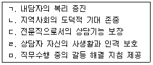
- ㄱ, ㄴ, ㄷ
- ㄴ, ㄷ, ㄹ
- ㄱ, ㄴ, ㄹ, ㅁ
- ㄱ, ㄴ, ㄷ, ㄹ, ㅁ
(정답률: 79%)
9. 직업상담 과정과 상담사의 역할을 잘못 짝지은 것은?
- 인지상담 - 수동적이고 수용적인 태도
- 정신분석적 상담 - 텅 빈 스크린
- 내담자 중심의 상담 - 촉진적인 관계형성 분위기 조성
- 행동주의상담 - 능동적이고 지시적인 역할
(정답률: 68%)
10. 대인 개발과 의사 결정 시 사용하는 인지적 기법으로 다음 설명에 해당하는 인지치료과정의 단계는?
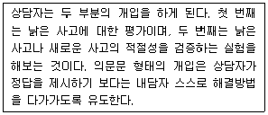
- 2단계
- 3단계
- 4단계
- 5단계
(정답률: 60%)
11. Bordin의 정신역동적 직업상담에서 사용하는 기법이 아닌 것은?
- 명료화
- 비교
- 소망-방어체계
- 반응 범주화
(정답률: 80%)
12. 직업카드분류(OCS)는 내담자의 어떤 특성을 사정하기 위한 도구인가?
- 흥미사정
- 가치사정
- 동기사정
- 성격사정
(정답률: 80%)
13. Erikson의 심리사회성 발달이론에서 다음과 같은 현상이 나타나는 시기는?
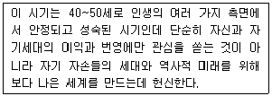
- 친밀감(intimacy) - 고립감(isolation)
- 근면성(industry) - 열등감(inferiority)
- 생성감(generativity) - 침체감(stagnation)
- 자아정체감(ego-identity) - 역할혼란(role confusion)
(정답률: 75%)
14. 개방적 질문의 형태와 가장 거리가 먼 것은?
- 시험이 끝나고서 기분이 어떠했습니까?
- 지난주에 무슨 일이 있었습니까?
- 당신은 학교를 좋아하지요?
- 당신은 누이동생을 어떻게 생각하는지요?
(정답률: 83%)
15. Beck의 인지행동상담에서 사용하는 주된 상담기법이 아닌 것은?
- 정서적 기법
- 반응적 기법
- 언어적 기법
- 행동적 기법
(정답률: 54%)
16. 행동주의 상담에서 내적인 행동변화를 촉진시키는 방법이 아닌 것은?
- 체계적 둔감법
- 근육이완훈련
- 인지적 모델링과 사고정지
- 상표제도
(정답률: 77%)
17. 내담자가 자기지시적인 삶을 영위하고 상담자에게 의존하지 않게 하기 위해 상담사가 내담자와 지식을 공유하며 자기강화 기법을 적극적으로 활용하는 행동주의 상담기법은?
- 모델링
- 과잉교정
- 내현적 가감법
- 자기관리 프로그램
(정답률: 77%)
18. Adler의 개인주의 상담에 관한 설명으로 옳은 것은?
- 내담자의 잘못된 가치보다는 잘못된 행동을 수정하는데 초점을 둔다.
- 상담자는 조력자의 역할을 하며 내담자가 상담을 주도적으로 이끈다.
- 상담과정은 사건의 객관성보다는 주관적 지각과 해석을 중시한다.
- 내담자의 사회적 관심보다는 개인적 열등감의 극복을 궁극적 목표로 삼는다.
(정답률: 49%)
19. 자기인식이 부족한 내담자를 사정할 때 인지에 대한 통찰을 재구조화하거나 발달시키는데 적합한 방법은?
- 직면이나 논리적 분석을 해준다.
- 불안에 대처하도록 심호흡을 시킨다.
- 은유나 비유를 사용한다.
- 사고를 재구조화 한다.
(정답률: 74%)
20. 상담기법 중 내담자가 전달하는 이야기의 표면적 의미를 상담자가 다른 말로 바꾸어서 말하는 것은?
- 탐색적 질문
- 요약과 재진술
- 명료화
- 적극적 경청
(정답률: 78%)
2과목: 직업심리학
21. 스트레스에 관한 설명으로 옳은 것은?
- 스트레스 수준과 수행은 U형 관계를 가진다.
- B유형 행동은 관상동맥성 질환과 밀접한 관련이 있다.
- 외적통제자는 스트레스 상황에 노출되더라도 크게 위험을 느끼지 않는다.
- 코티졸은 부신피질에서 방출하는 스트레스 통제 호르몬이다.
(정답률: 68%)
22. 적성검사에서 높은 점수를 받은 사람들일수록 입사 후 업무수행이 우수한 것으로 나타났다면, 이 검사는 어떠한 타당도가 높은 것인가?
- 구성타당도(construct validity)
- 내용타당도(content validity)
- 예언타당도(predictive validity)
- 공인타당도(concurrent validity)
(정답률: 79%)
23. 다음에 해당하는 진로발달 이론은?
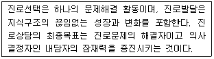
- 사회인지적 진로이론
- 인지적 정보처리적 진로이론
- 목표중심적 진로이론
- 자기효능감 중심의 진로이론
(정답률: 57%)
24. 강화계획 중 자동차 영업사원이 판매 대수에 따라 일정한 성과급을 받는 것은?
- 고정간격
- 고정비율
- 변동간격
- 변동비율
(정답률: 65%)
25. 경력개발 프로그램을 설계할 때 누구를 대상으로 어떤 경력평가 프로그램을 만들지 알아보는 평가는?
- 슈퍼(Super) 평가
- 니즈평가
- 직무평가
- 조직평가
(정답률: 69%)
26. 직업지도 시 직업적응 단계에서 이루어지는 것이 아닌 것은?
- 직업생활에 적응하기 위하여 노력한다.
- 여러 가지 직업 중에서 장ㆍ단점을 비교한다.
- 직업전환 및 실업위기에 대응하기 위한 자기만의 계획을 갖는다.
- 은퇴 후의 생애설계를 한다.
(정답률: 55%)
27. 내담자의 적성과 흥미 또는 성격이 직업적 요구와 달라 생긴 직업적응문제를 해결하는데 가장 적합한 방법은?
- 스트레스 관리 방안 모색
- 직업 전환
- 인간관계 개선 프로그램 제공
- 갈등관리 프로그램 제공
(정답률: 77%)
28. 검사 점수의 표준오차에 관한 설명을 옳은 것은?
- 검사의 표준오차는 클수록 좋다.
- 검사의 표준오차는 검사 점수의 타당도를 나타내는 수치다.
- 표준오차를 고려할 때 오차 범위 안의 점수 차이는 무시해도 된다.
- 검사의 표준오차는 표준편차의 다른 표현이다.
(정답률: 64%)
29. 직무능력 검사에 관한 설명으로 옳은 것은?
- 인지능력 중에서 지각속도, 공간지향과 시각화는 기계적 능력에도 해당한다.
- 기계적응력 검사는 Fleishman과 그의 동료들이 개발하였다.
- 직무활동에 따른 신체능력을 측정함에 있어 7점 철도를 이용한 사람은 Purdue이다.
- 정신운동능력 검사들은 복잡성 수준이 가장 낮은 직무들에 대해 타당도가 낮다.
(정답률: 53%)
30. Tolbert가 제시한 '개인의 진로발달에 영향을 주는 요인'이 아닌 것은?
- 교육정도(educational degree)
- 직업흥미(occupational interest)
- 직업전망(occupational prospective)
- 가정ㆍ성별ㆍ인종(familyㆍsexㆍrace)
(정답률: 65%)
31. 특성요인 이론의 기본적인 가정이 아닌 것은?
- 인간은 신뢰롭고 타당하게 측정할 수 없는 독특한 특성을 지니고 있다.
- 직업에서의 성공을 위해 매우 구체적인 특성을 각 개인이 지닐 것을 요구한다.
- 진로선택은 다소 직접적인 인지과정이기 때문에 개인의 특성과 직업의 특성을 짝짓는 것은 가능하다.
- 개인의 특성과 직업의 요구사항이 밀접하게 관련을 맺을수록 직업적 성공의 가능성은 커진다.
(정답률: 61%)
32. 다음에 해당하는 스트레스 관리전략은?
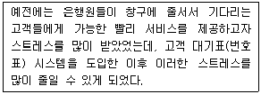
- 반응지향적 관리전략
- 증후지향적 관리전략
- 평가지향적 관리전략
- 출처지향적 관리전략
(정답률: 70%)
33. 진로성숙도 검사(CMI)의 태도척도 영역과 이를 측정하는 문항의 예가 바르게 짝지어진 것은?
- 결정성 - 나는 선호하는 진로를 자주 바꾸고 있다.
- 독립성 - 나는 졸업할 때까지는 진로선택 문제에 별로 신경을 쓰지 않겠다.
- 타협성 - 일하는 것이 무엇인지에 대해 생각한 바가 거의 없다.
- 성향 - 나는 하고 싶기는 하나 할 수 없는 일을 생각하느라 시간을 보내곤 한다.
(정답률: 70%)
34. 직무분석에 관한 설명으로 옳은 것은?
- 직무 관련 정보를 수집하는 절차이다.
- 직무의 내용과 성질을 고려하여 직무들 간의 상대적 가치를 결정하는 절차이다.
- 작업자의 직무수행 수준을 평가하는 절차이다.
- 작업자의 직무기술과 지식을 개선하는 공식적 절차이다.
(정답률: 57%)
35. 직업발달이론에 관한 설명으로 틀린 것은?
- 특성-요인이론은 Parsons의 직업지도모델에 기초하여 형성되었다.
- Super의 생애발달단계는 환상기-잠정기-현실기로 구분한다.
- 일을 승화의 개념으로 설명하는 이론은 정신분석이론이다.
- Holland의 직업적 성격유형론에서 중요시하는 개념은 일관도, 일치도, 분화도 등이다.
(정답률: 65%)
36. Holland의 진로발달에 관한 육각형에서 서로 대각선에 위치하여 대비되는 특성을 지닌 유형들이 아닌 것은?
- 진취형(E)과 탐구형(I)
- 사회형(S)과 예술형(A)
- 현실형(R)과 사회형(S)
- 예술형(A)과 관습형(C)
(정답률: 72%)
37. 다음은 무엇을 설명한 것인가?
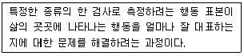
- 신뢰도 과정
- 타당화 과정
- 추론 과정
- 개인차
(정답률: 64%)
38. 과업지향적 직무분석방법 중 기능적 직무분석의 세 가지 차원이 아닌 것은?
- 기술(skill)
- 자료(data)
- 사람(people)
- 사물(things)
(정답률: 69%)
39. 스트레스 요인과 상황에 관한 설명으로 틀린 것은?
- 좌절(Frustration) - 원하는 목표가 지연되거나 차단될 때이다.
- 과잉부담(Overload) - 개인의 능력을 벗어난 일이나 요구일 때이다.
- 갈등(Conflict) - 두 가지의 긍정적인 일들이 갈등을 일으킬 때이다.
- 생활의 변화(Life Change) - 부정적인 사건이 제한된 시간 내에 많을 때이다.
(정답률: 60%)
40. 지능지수(IQ)라는 개념을 처음으로 도입한 심리검사는?
- 비네 검사
- 스텐포드-비네 검사
- 다면적 인성검사
- 직업흥미검사
(정답률: 73%)
3과목: 직업정보론
41. 일반적인 직업정보 처리과정을 바르게 나열한 것은?
- 수집 → 제공 → 분석 → 가공 → 평가
- 수집 → 가공 → 제공 → 분석 → 평가
- 수집 → 평가 → 가공 → 제공 → 분석
- 수집 → 분석 → 가공 → 제공 → 평가
(정답률: 75%)
42. 한국직업사전의 부가직업정보에 해당되지 않는 것은?
- 직무기능(DPT)
- 숙련기간
- 자격ㆍ면허
- 직무개요
(정답률: 55%)
43. 재직자 대상 설문조사를 통해 직업정보를 수집하고자 한다. 설문지의 질문순서에 관한 설명으로 틀린 것은?
- 특수한 것을 먼저 묻고 그 다음에 일반적인 것을 질문하도록 하는 것이 좋다.
- 질문내용은 가급적 구체적인 용어로 표현하는 것이 좋다.
- 개인 연봉에 관한 질문과 같이 민감한 질문은 가급적 뒤로 배치하는 것이 좋다.
- 질문은 논리적인 순서에 따라 자연스럽게 배치하는 것이 좋다.
(정답률: 78%)
44. 한국표준산업분류(KSIC 9)의 대분류에 해당하지 않는 것은?
- A 농업, 임업 및 어업
- D 전기, 가스, 중기 및 수도사업
- L 부동산업 및 임대업
- R 기타 공공, 수리 및 개인서비스업
(정답률: 62%)
45. 실업급여 중 취업촉진수당이 아닌 것은?
- 직업능력개발 수당
- 광역 구직활동비
- 훈련연장급여
- 이주비
(정답률: 67%)
46. 한국표준산업분류의 분류목적에 관한 설명으로 틀린 것은?
- 산업활동에 의한 통계자료의 수집, 제표, 분석 등을 위해서 활동카테고리를 제공한다.
- 일반 행정 및 산업정책관련 법령에서 적용대상 산업영역을 한정하는 기준으로 준용된다.
- 취업알선을 위한 구인ㆍ구직안내 기준으로 사용된다.
- 산업통계 자료의 정확성, 비교성을 위하여 모든 통계작성기관이 의무적으로 사용해야 한다.
(정답률: 48%)
47. 한국직업전망(2015)에 관한 설명으로 틀린 것은?(관련 규정 개정전 문제로 기존 정답은 1번입니다. 여기서는 1번을 누르면 정답 처리 됩니다. 자세한 내용은 해설을 참고하세요.)
- 직업전문가 및 재직자의 정성적 전망결과를 기반으로 하되 정량적 전망을 일부 반영하여 결과를 도출했다.
- 정성적 전망조사는 직업전망 수록직업을 대상으로 평균 5명의 재직자 및 전문가에게 실시했다.
- 수록직업은 한국고용직업분류(KECO)에 기초하여 종사자수가 일정규모 이상이거나 청소년 및 일반구직자로부터 높은 관심을 받는 직업 등을 우선으로 선정했다.
- KECO의 세분류 직업 429개 중 승진이나 경력개발을 통해 진입하는 관리직을 제외하였고, 직무가 유사한 직업은 소분류 단위로 통합했다.
(정답률: 63%)
48. 공공직업정보와 비교한 민간직업정보의 일반적 특성에 관한 설명으로 틀린 것은?
- 필요한 시기에 최대한 활용되도록 한시적으로 신속하게 생산되어 운영된다.
- 국제적으로 인정되는 객관적인 기준에 근거하여 직업을 분류한다.
- 특정한 목적에 맞게 해당분야 및 직종을 제한적으로 선택한다.
- 시사적인 관심이나 흥미를 유도할 수 있도록 해당 직업을 분류한다.
(정답률: 73%)
49. 응시자격의 제한이 없는 서비스분야 국가기술 자격 종목은?
- 스포츠경영관리사
- 임상심리사2급
- 컨벤션기획사1급
- 국제의료관광코디네이터
(정답률: 70%)
50. 한국표준산업분류의 적용원칙에 관한 설명으로 틀린 것은?
- 생산 단위는 산출물뿐만 아니라 투입물과 생산 공정 등을 함께 고려하여 그들의 활동을 가장 정확하게 설명된 항목에 분류해야 한다.
- 복합적인 활동 단위는 우선적으로 최상급 분류단계(대분류)를 정확히 결정하고, 순차적으로 중, 소, 세, 세세분류 단계 항목을 결정하여야 한다.
- 산업 활동이 결합되어 있는 경우에는 그 활동단위의 주된 활동에 따라서 분류하여야 한다.
- 수수료 또는 계약에 의하여 활동을 수행하는 단위는 자기계정과 자기책임하에서 생산하는 단위와 별도 항목으로 분류되어야 한다.
(정답률: 71%)
51. 직업능력개발훈련 중 양성훈련에 관한 설명으로 옳은 것은?
- 근로자에게 작업에 필요한 기초적 직무수행능력을 습득시키기 위하여 실시하는 직업능력 개발훈련이다.
- 정보ㆍ통신매체 등을 이용하여 원격지에 있는 근로자에게 실시하는 기업능력개발훈련이다.
- 산업체의 생산시설을 이용하여 실시하는 직업능력개발훈련이다.
- 직업에 필요한 기초적인 직무수행능력을 가지고 있는 사람에게 더 높은 직무수행능력을 습득시키기 위한 직업능력개발훈련이다.
(정답률: 67%)
52. 다음은 어떤 국가기술자격 등급의 검정기준인가?
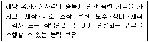
- 기능장
- 기 사
- 산업기사
- 기능사
(정답률: 62%)
53. 2017년 1월 워크넷 구인ㆍ구직 및 취업동향에서 신규구인인원 420명, 신규구직건 수 800건, 취업건수가 210건이라면 구인배수는?(단, 소수 3째 자리에서 반올림)
- 0.53
- 0.79
- 1.50
- 3.81
(정답률: 55%)
54. 워크넷의 잡맵(Job Map)에서 제공하는 직업별 정보가 아닌 것은?(관련 규정 개정전 문제로 여기서는 기존 정답인 2번을 누르면 정답 처리됩니다. 자세한 내용은 해설을 참고하세요.)
- 종사자수
- 평균학력
- 평균근속년수
- 성 비
(정답률: 65%)
55. 한국고용직업분류(KECO)의 분류 원칙에 대한 설명으로 옳은 것은?(오류 신고가 접수된 문제입니다. 반드시 정답과 해설을 확인하시기 바랍니다.)
- 직업분류에서 일반적으로 사용하는 10진법을 준용하였다.
- 직능 수준(Skill Level)을 분류의 우선적인 기준으로 사용하였다.
- 직업분류의 기본 원칙인 포괄성과 배타성을 고려하여 분류하였다.
- 최소 고용인원을 고려하여 모든 직무를 일괄적으로 직업단위로 분류하였다.
(정답률: 48%)
56. 워크넷에서 채용정보를 검색하는 방법에 대한 설명으로 틀린 것은?
- 최대 10개의 직종선택이 가능하다.
- 연령별 채용정보를 검색할 수 있다.
- 이메일 입사지원이 가능한 채용정보를 검색할 수 있다.
- 최저희망임금은 연봉, 월급, 일급, 시급별로 입력할 수 있다.
(정답률: 63%)
57. 최저임금에 관한 설명으로 틀린 것은?
- 임금의 최저수준을 정하고, 사용자에게 이 수준 이상의 임금을 지급하도록 법으로 강제함으로써 저임금 근로자를 보호한다.
- 2017년 최저임금은 전년대비 7.3% 상승한 시간급 6,470원이다.
- 최저임금은 최저임금위원회의 심의ㆍ의결을 거쳐 기획재정부장관이 결정한다.
- 최저임금 적용을 받는 사용자는 최저임금액을 근로자가 쉽게 볼 수 있는 장소에 게시하거나 그 외 적당한 방법으로 근로자에게 널리 알려야 한다.
(정답률: 72%)
58. 한국표준직업분류 대분류와 직능수준이 틀리게 연결된 것은?(관련 규정 개정전 문제로 기존 정답은 3번입니다. 여기서는 3번을 누르면 정답 처리됩니다. 자세한 내용은 해설을 참고하세요.)
- 관리자 - 제4직능 수준 혹은 제3직능 수준 필요
- 판매 종사자 - 제2직능 수준 필요
- 군인 - 제2직능 수준 필요
- 단순노무 종사자 - 제1직능 수준 필요
(정답률: 78%)
59. 직업정보의 가공에 대한 설명으로 가장 적합하지 않은 것은?
- 효율적인 정보제공을 위해 시각적 효과를 부가한다.
- 정보를 공유하는 방법과도 연관되어 있다.
- 긍정적인 정보를 제공하는 입장에서 출발해야 한다.
- 정보의 생명력을 측정하여 활용방법을 선정하고 이용자에게 동기를 부여할 수 있도록 구상한다.
(정답률: 70%)
60. 직업, 자격 정보를 제공하는 정보서 또는 인터넷 사이트와 제공내용이 틀리게 짝지어진 것은?
- 한국직업사전 - 직업별 평균 임금
- 한국직업전망 - 직업별 향후 일자리수 전망
- Q-NET(q-net.or.kr) - 자격종목별 합격률
- 민간자격정보서비스(pqi.or.kr) - 자격별 발급기관
(정답률: 69%)
4과목: 노동시장론
61. 다음 표에서 실업률은?
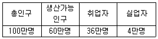
- 4.0%
- 6.7%
- 10.0%
- 12.5%
(정답률: 61%)
62. 특별한 기능이나 직업 또는 숙련도에 따라 조직된 배타적이며 동일직업의식이 강한 노동조합은?
- 일반노동조합
- 산업별 노동조합
- 직종별 노동조합
- 기업별 노동조합
(정답률: 66%)
63. 신고전학파가 주장하는 노동조합의 사회적 비용이 아닌 것은?
- 비노조와의 임금격차와 고용저하에 따른 배분적 비효율
- 경직적 인사제도에 의한 기술적 비효율
- 파업으로 인한 생산중단에 따른 생산적 비효율
- 작업방해에 의한 구조적 비효율
(정답률: 51%)
64. 노동 수요측면에서 비정규직 증가의 원인과 가장 거리가 먼 것은?
- 세계화에 따른 기업간 경쟁 환경의 변화
- 정규직 근로자 해고의 어려움
- 고학력 취업자의 증가
- 정규노동자 고용비용의 증가
(정답률: 61%)
65. 소득정책의 효과에 대한 설명으로 틀린 것은?
- 성장산업의 위축을 초래할 수 있다.
- 행정적 관리비용을 절감할 수 있다.
- 임금억제에 이용될 가능성이 크다.
- 급격한 물가상승기에 일시적으로 사용하면 효과를 거둘 수 있다.
(정답률: 57%)
66. 임금관리의 주요 구성요소와 가장 거리가 먼 것은?
- 기본급과 수당 등의 임금체계
- 임금지급 시기
- 노동생산성 수준에 따른 임금수준
- 고정급제와 성과급제 등의 임금형태
(정답률: 61%)
67. 다음 ( ) 안에 들어갈 알맞은 것은?
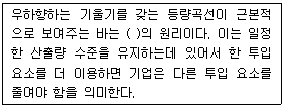
- 대 체
- 상 쇄
- 보 완
- 상 극
(정답률: 67%)
68. 생산성 임금제를 따를 때 실질 생산성 증가율이 5%이고 물가상승률이 2%라고 하면 명목임금의 인상분은?
- 3%
- 5%
- 7%
- 10%
(정답률: 65%)
69. 한국의 임금 패리티(parity)지수는 100이고 일본의 임금패리티지수를 80이라 가정할 때의 설명으로 옳은 것은?
- 국민소득을 감안한 한국의 임금수준이 일본보다 높다.
- 한국의 생산성과 삶의 질이 일본보다 낮다.
- 국민소득을 감안한 한국의 임금수준이 일본보다 낮다.
- 한국의 생산성과 삶의 질이 일본보다 높다.
(정답률: 57%)
70. 노동수요의 탄력성에 관한 설명으로 틀린 것은?
- 생산물에 대한 수요가 탄력적일수록 노동수요도 탄력적으로 된다.
- 총생산비에 대한 노동비용의 비중이 클수록 노동수요는 비탄력적이 된다.
- 노동을 다른 생산요소로 대체하는 것이 용이할수록 노동 수요는 탄력적으로 된다.
- 노동 이외 생산요소의 공급탄력성이 작을수록 노동수요는 비탄력적으로 된다.
(정답률: 60%)
71. 연공급(semiority-based pay)의 장점이 아닌 것은?
- 정기 승급을 실시함에 따라 생활의 안정감과 장래에 대한 기대를 가질 수 있다.
- 위계질서의 확립이 용이하다.
- 동기부여 효과가 강하다.
- 근로자에 대한 교육훈련의 효과를 높일 수 있다.
(정답률: 60%)
72. 노사관계의 주체를 사용자 및 단체, 노동자 및 단체, 정부로 규정하고 이들 간의 관계는 기술, 시장 또는 예산상의 제약, 권력구조에 의해 결정된다는 노사관계이론은?
- 시스템이론
- 수렴이론
- 분산이론
- 단체교섭이론
(정답률: 61%)
73. 여성이 특정 직종에 집중되면서 여성노동시장의 경쟁이 격화됨으로써 여성의 임금 수준이 저하되는 현상은?
- 위협효과
- 파급효과
- 대체효과
- 혼잡효과
(정답률: 51%)
74. 사용자의 부가급여 선호 이유가 아닌 것은?
- 절세(節稅)효과
- 근로자 유치
- 장기근속 유도
- 퇴직금부담 감소
(정답률: 59%)
75. 경제활동 참가 또는 노동공급을 결정하는 요인에 대한 설명으로 사실과 가장 거리가 먼 것은?
- 비근로소득이 클수록 경제활동 참가는 낮아진다.
- 취학 전 자녀수가 많을수록 경제활동 참가는 낮아진다.
- 교육수준이 높아질수록 경제활동 참가는 증가한다.
- 기업의 노동시간이 신축적일수록 노동공급이 감소한다.
(정답률: 60%)
76. 마찰적 실업을 해소하기 위한 정책이 아닌 것은?
- 구인 및 구직에 대한 전국적 전산망 연결
- 직업안내와 직업상담 등 직업알선기관에 의한 효과적인 알선
- 고용실태 및 전망에 관한 자료제공
- 노동자의 전직과 관련된 재훈련 실시
(정답률: 68%)
77. 노동시장의 유연성을 높일 수 있는 방안과 가장 거리가 먼 것은?
- 신속한 고용조정능력을 갖춘다.
- 전직실업자의 신속한 재취업능력을 높인다.
- 국제노동기구와의 연대를 모색한다.
- 노동수요측면의 능력위주 인사관행을 확립한다.
(정답률: 54%)
78. 마르크스(K. Marx)에 의하면 기술진보로 인하여 상대적 과잉인구가 발생하게 되는데 이를 무슨 실업이라 하는가?
- 마찰적 실업
- 구조적 실업
- 기술적 실업
- 경기적 실업
(정답률: 57%)
79. 경제활동인구조사에서 종사상지위별 취업자분류에 해당하지 않는 것은?
- 자영업자
- 무급가족종사자
- 임시근로자
- 관리자
(정답률: 48%)
80. 최저임금제도와 근로장려세제(EITC : earned imcome tax credit)에 관한 설명으로 틀린 것은?
- EITC는 저소득근로계층을 수혜대상으로 한다.
- EITC는 이론적으로 저생산성 저임금근로자의 실업을 유발하지 않는다.
- 최저임금제도하에서는 최저임금 이하를 받는 근로자에게 그 혜택이 주어진다.
- EITC와 최저임금제 실시는 공통적으로 사중손실(dead weight loss) 발생으로 총경제후생(economic surplus)을 축소시킨다.
(정답률: 55%)
5과목: 노동관계법규
81. 기간제 및 단시간근로자 보호 등에 관한 법률상 사용자가 기간제근로자와 근로계약을 체결하는 때에 서면으로 명시하여야 하는 사항이 아닌 것은?
- 근로계약기간에 관한 사항
- 휴일ㆍ휴가에 관한 사항
- 임금의 구성항목ㆍ계산방법 및 지불방법에 관한 사항
- 근로일 및 근로일별 근로시간
(정답률: 48%)
82. 남녀고용평등과 일ㆍ가정 양립 지원에 관한 법률상 고용에 있어서 남녀의 평등한 기회와 대우를 보장하여야 할 사항으로 명시되어 있지 않은 것은?
- 모집과 채용
- 임 금
- 근로시간
- 교 육
(정답률: 48%)
83. 근로자직업능력 개발법상의 내용으로 ( )에 알맞은 것은?
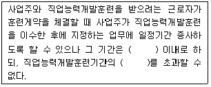
- ㄱ : 1년, ㄴ : 1배
- ㄱ : 2년, ㄴ : 2배
- ㄱ : 3년, ㄴ : 2배
- ㄱ : 5년, ㄴ : 3배
(정답률: 72%)
84. 근로자직업능력 개발법상 직업능력개발훈련의 기본원칙과 거리가 먼 것은?
- 근로자 개인의 희망ㆍ적성ㆍ능력에 맞게 생애에 걸쳐 체계적으로 실시되어야 한다.
- 민간의 자율과 창의성이 존중되고 직업능력개발훈련이 필요한 근로자에 대하여 균등한 기회가 보장되도록 실시되어야 한다.
- 신기술을 필요로 하는 업무에 종사하는 근로자에 대한 직업능력개발훈련은 중요시되어야 한다.
- 교육 관계 법에 따른 학교교육 및 산업현장과 긴밀하게 연계될 수 있도록 하여야 한다.
(정답률: 52%)
85. 고용정책 기본법상 지역고용정책기본계획의 수립ㆍ시행에 관한 설명으로 틀린 것은?
- 특별시장ㆍ광역시장ㆍ특별자치시장ㆍ도지사 및 특별자치도지사는 지역고용심의회의 심의를 거쳐 지역 주민의 고용촉진과 고용안정 등에 관한 지역고용정책기본계획을 수립ㆍ시행하여야 한다.
- 특별시장ㆍ광역시장ㆍ특별자치시장ㆍ도지사 및 특별자치도지사는 지역고용정책기본계획을 수립한 때에는 고용노동부장관이 수립한 고용정책에 관한 기본계획과 일치되도록 하여야 한다.
- 특별시장ㆍ광역시장ㆍ특별자치시장ㆍ도지사 및 특별자치도지사는 지역고용정책기본계획을 세우기 위하여 필요하면 관계 중앙행정정기관의 장 및 관할 지역의 직업안정기관의 장에게 협조를 요청할 수 있다.
- 국가는 특별시장ㆍ광역시장ㆍ특별자치시장ㆍ도지사 및 특별자치도지사가 지역고용정책기본계획을 수립ㆍ시행하는 데에 필요한 지원을 할 수 있다.
(정답률: 51%)
86. 남녀고용평등과 일ㆍ가정 양립 지원에 관한 법률상 육아휴직과 육아기 근로시간 단축의 사용형태로 틀린 것은?
- 육아휴직을 11개월 동안 1회 사용
- 육아기 근로시간 단축을 5개월씩 2회 사용
- 육아휴직을 6개월 동안 1회 사용하고 육아기 근로시간 단축을 3개월 동안 1회 사용
- 육아휴직을 3개월 동안 1회 사용하고 육아기 근로시간 단축을 1개월씩 2회 사용
(정답률: 58%)
87. 근로기준법상 취업규칙에 관한 설명으로 틀린 것은?
- 상시 10명 이상의 근로자를 사용하는 사용자는 취업규칙을 작성하여 고용노동부장관에게 신고하여야 한다.
- 사용자는 취업규칙의 작성 또는 변경에 관하여 원칙적으로 해당 사업 또는 사업장에 근로자의 과반수로 조직된 노동조합이 있는 경우에는 그 노동조합, 근로자의 과반수로 조직된 노동조합이 없는 경우에는 근로자의 과반수의 동의를 받아야 한다.
- 취업규칙에서 근로자에 대하여 감급(減給)의 제재를 정할 경우에 그 감액은 1회의 금액이 평균임금의 1일분의 2분의 1을, 총액이 1임금지급기의 임금 총액의 10분의 1을 초과하지 못한다.
- 취업규칙은 법령이나 해당 사업 또는 사업장에 대하여 적용되는 단체협약과 어긋나서는 아니 되며, 고용노동부장관은 법령이나 단체협약에 어긋나는 취업규칙의 변경을 명할 수 있다.
(정답률: 48%)
88. 고용보험법의 적용제외 근로자에 해당하는 자는?
- 55세 이후에 새로이 고용된 근로자
- 별정우체국법에 따른 별정우체국 직원
- 근로자파견사업에 고용된 파견근로자
- 6개월 미만의 기간 동안 고용되는 일용근로자
(정답률: 67%)
89. 파견근로자 보호 등에 관한 법률에 관한 설명으로 틀린 것은?
- 파견사업주는 근로자를 파견근로자로서 고용하고자 할 때에는 미리 당해 근로자에게 그 취지를 서면으로 알려주어야 한다.
- 파견사업주는 정당한 이유 없이 파견근로자 또는 파견근로자로서 고용되고자 하는 자와 그 고용관계의 종료 후 사용사업주에게 고용되는 것을 금지하는 내용의 근로계약을 체결하여서는 아니 된다.
- 파견사업주는 파견사업관리대장을 작성ㆍ보존하여야 한다.
- 파견사업주는 파견근로자의 적절한 파견근로를 위하여 사용사업관리책임자를 선임하여야 한다.
(정답률: 55%)
90. 근로기준법상 해고에 관한 설명으로 틀린 것은?
- 사용자는 근로자에게 정당한 이유 없이 해고를 하지 못한다.
- 사용자는 근로자를 해고하려면 해고사유와 해고시기를 서면으로 통지하여야 한다.
- 사용자는 근로자를 해고하려면 적어도 30일 전에 예고를 하여야 하고, 30일 전에 예고를 하지 아니하였을 때에는 30일분 이상의 통상임금을 지급하여야 함이 원칙이다.
- 사용자가 근로자에게 부당해고를 하면 근로자는 노동위원회에 구제신청을 할 수 있고, 구제신청은 부당해고가 있었던 날로부터 6개월 이내에 하여야 한다.
(정답률: 54%)
91. 직업안정법상 직업안정기관에서 하는 업무가 아닌 것은?
- 고용정보의 제공
- 직업소개
- 직업지도
- 근로자 파견
(정답률: 68%)
92. 헌법에 규정된 노동3권의 내용으로 옳은 것은?(문제 오류로 처음 가답안 발표시 3번으로 발표되었으나 확정답안 발표시 모두 정답 처리 되었습니다. 여기서는 3번을 누르면 정답 처리 됩니다.)
- 공무원인 근로자는 어떠한 경우에도 단체행동권을 가질 수 없다.
- 근로조건의 기준은 인간의 존엄성을 보장하도록 대통령령으로 정한다.
- 연소자의 근로는 특별한 보호를 받는다.
- 법률이 정하는 주요방위산업체에 종사하는 근로자의 단체행동권은 원칙적으로 제한된다.
(정답률: 69%)
93. 남녀고용평등과 일ㆍ가정 양립 지원에 관한 법령상 육아휴직에 관한 설명으로 옳은 것은?
- 사업주는 근로자가 만 8세 이하 또는 초등학교 2학년 이하의 자녀의 양육을 위하여 육아휴직을 신청하는 경우 이를 허용해야 한다.
- 육아휴직기간은 6개월 이내로 하되, 해당 영아가 생후 1년이 되는 날을 경과할 수 없다.
- 육아휴직을 시작하려는 날의 전날까지 해당 사업에서의 계속 근로기간이 1년 미만인 근로자에게도 육아휴직을 허용해야 한다.
- 사업주는 육아휴직을 마친 후에는 휴직 전과 같은 업무 또는 같은 수준의 임금을 지급하는 직무에 복귀시켜야 하며 육아휴직 기간은 근속기간에 포함하지 않는다.
(정답률: 64%)
94. 근로기준법상 평균임금에 관한 설명으로 틀린 것은?
- 평균임금은 이를 산정하여야 할 사유가 발생한 날 이전 3개월 동안에 그 근로자에게 지급된 임금의 총액을 그 기간의 총일수로 나눈 금액을 말한다.
- 일용근로자의 평균임금은 고용노동부장관이 사업이나 직업에 따라 정하는 금액으로 한다.
- 평균임금이 그 근로자의 통상임금보다 적으면 그 통상임금액을 평균임금으로 한다.
- 근로자에게 정기적이고 일률적으로 지급하기로 정한 시간급 금액, 일금 금액, 주급 금액, 월급 금액 또는 도급 금액을 말한다.
(정답률: 49%)
95. 직업안정법상 구인ㆍ구직의 신청에 관한 설명으로 옳은 것은?
- 국외 취업희망자의 구인신청의 유효기간은 1년으로 한다.
- 직업안정기관의 장은 관할구역의 읍ㆍ면ㆍ동사무소에 구인신청서와 구직신청서를 갖추어두어 구인자ㆍ구직자의 편의를 도모하여야 한다.
- 직업안정기관의 장은 접수된 구인신청서 및 구직신청서를 3년간 관리ㆍ보관하여야 한다.
- 수리된 구인신청의 유효기간은 3개월이다.
(정답률: 57%)
96. 고용정책 기본법에 대한 설명으로 틀린 것은?
- 고용서비스를 제공하는 자는 그 업무를 수행할 때에 합리적인 이유 없이 성별 등을 이유로 구직자를 차별하여서는 아니 된다.
- 고용노동부장관은 관계 중앙행정기관의 장과 협의하여 5년마다 국가의 고용정책에 관한 기본계획을 수립하여야 한다.
- 상시 300명 이상의 근로자를 사용하는 사업주는 매년 근로자의 고용형태 현황을 공시하여야 한다.
- 고용정책기본법에서 “근로자”란 직업의 종류와 관계없이 임금을 목적으로 사업이나 사업장에 근로를 제공하는 자로 정의된다.
(정답률: 64%)
97. 헌법상 근로의 특별한 보호 또는 우선적인 근로기회 보장의 대상자로서 명시되어있지 않은 것은?
- 여 자
- 연소자
- 실업자
- 국가유공자
(정답률: 66%)
98. 고용보험법상 이직한 피보험자의 구직급여 수급요건으로 틀린 것은?
- 이직일 이전 18개월간 피보험 단위기간이 통산하여 150일 이상일 것
- 근로의 의사와 능력이 있음에도 불구하고 취업하지 못한 상태에 있을 것
- 재취업을 위한 노력을 적극적으로 할 것
- 일용근로자는 수급자격 인정신청일 이전 1개월 동안의 근로일수가 10일 미만일 것
(정답률: 62%)
99. 고용상 연령차별금지 및 고령자고용촉진에 관한 법률상 고령자인재은행으로 지정된 직업안정법에 따른 무료직업소개사업을 하는 비영리법인의 사업 법위에 해당하지 않는 것은?
- 고령자의 직업능력개발훈련
- 고령자에 대한 구인ㆍ구직 등록
- 고령자에 대한 직업지도 및 취업알선
- 취업희망 고령자에 대한 직업상담 및 정년퇴직자의 재취업 상담
(정답률: 59%)
100. 근로자직업능력 개발법상 직업능력개발훈련교사의 결격사유로 틀린 것은?
- 피성년후견인ㆍ피한정후견인
- 금고 이상의 형의 집행유예를 선고받고 그 유예기간 중에 있는 사람
- 금고 이상의 형을 선고받고 그 집행이 끝나거나(집행이 끝난 것으로 보는 경우를 포함한다) 집행이 면제된 날부터 3년이 지나지 아니한 사람
- 법원의 판결에 따라 자격이 상실되거나 정지된 사람
(정답률: 64%)